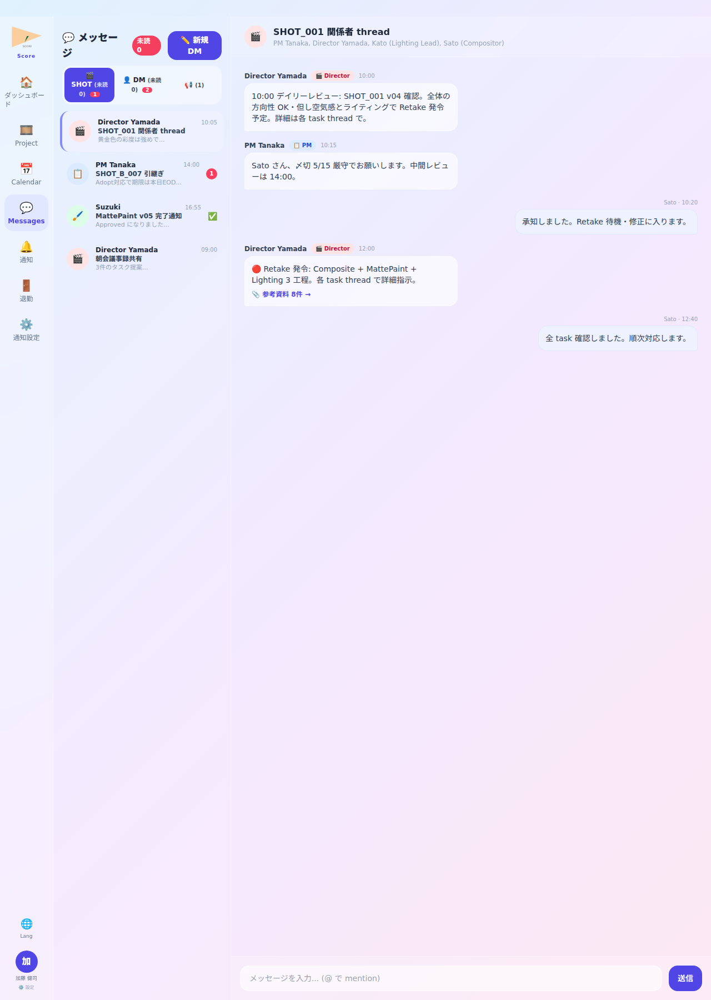

📌 このロールが Score でできること
- ▸User からの技術相談・トラブル対応を SHOT thread で支援
- ▸Director QC で発生した テクニカル issue を User と共同解決
- ▸リファレンス・過去 asset・pipeline 情報の参照支援
- ▸Director 不在 project では代替担当として mention 必須 enforce 対応
- ▸Lead 自身も テクニカル観点で QC 上申し Director 判定を仰ぐ立場
💡 1 日の流れ — 架空 project「桜咲く街」(TV アニメ・第 3 話 制作中) を例に
加藤 Lead は「桜咲く街」 Lighting 担当 User の テクニカルサポート役。朝のルーティン → 各 User の進捗・困りごと確認 → 技術相談対応 → Director QC 上申 (必要時) → 退勤。
ログイン・朝のルーティン

📸 画面例: 加藤 Lead 朝の体調🙂 → 桜咲く街 Lighting 担当 5 SHOT 確認
💬 例えば
例えば 朝のルーティンで「sq01 c05 (佐藤花子) Review 中・sq01 c08 (中村氏) Retake 1 件あり」 と表示されたら、 c05 を優先確認 → c08 の Retake は午後対応、 と段取り。
Lead ダッシュボード
📸 画面例: 桜咲く街 sq01 c05 Lighting Lead 上申待ち 1 件
💬 例えば
例えば 紫 card「📌 桜咲く街 sq01 c05 部内 Review 依頼 (佐藤花子)」 と表示されたら、 User が技術相談を兼ねた Review を求めている合図 → SHOT thread でフォローアップ。
プロジェクト詳細

📸 画面例: 桜咲く街 第 3 話 Lighting 進捗 70%・残 8 SHOT
💬 例えば
例えば 桜咲く街 第 3 話 全 24 SHOT 中 Lighting 担当 16 SHOT について filter → 残 8 SHOT (進捗 50%) と判明 → 担当 User 全員に thread で「今週中の進捗目標」共有。
SHOT 詳細・テクニカルチェック
📸 画面例: 桜咲く街 sq01 c05 の Lighting v03 確認 → 部内 OK 判定
💬 例えば
例えば sq01 c05 v03 を確認 → light rig 設定がプロジェクト規約通りか check → OK なら User に「テクニカル OK・Director 上申してください」 と返信。 NG なら具体修正方針を提示。
QC 上申 (Director へ)

📸 画面例: 加藤 Lead 桜咲く街 sq01 c05 v03 Director 山田に QC 上申 + mention
💬 例えば
例えば 加藤 Lead 自身が テクニカル issue 解決した SHOT (User 不在 or 緊急対応分) を Director に上申する場合、 「📤 Director QC へ上申」 button → mention で山田選択 → 送信。 通常は User が QC 提出するが、 Lead も上申できる経路。
メッセージ・SHOT thread

📸 画面例: 桜咲く街 sq01 c05 thread で佐藤 User に light direction 助言
💬 例えば
例えば 佐藤 User「光源の影が硬すぎる」 と相談 → 加藤 Lead「area light の size を 0.5m → 1.5m へ・soft shadow ON」 と具体的に thread 返信 → 過去の問答も thread に蓄積され、 他の User も後から参照可能。
通知センター

📸 画面例: 山田 Director Approve 通知 → 桜咲く街 sq01 c05 完了確認
💬 例えば
例えば 上申した sq01 c05 が Approve されると Push toast「✅ sq01 c05 Approved by 山田博」 が即届く。 SHOT thread 投稿は通常 SSE のみ受信 (画面開いてる時) で 集中力維持。
退勤報告

📸 画面例: 加藤 Lead「桜並木 light rig 完成・明日 sq02 着手」 提出
💬 例えば
例えば「本日: sq01 c05/c07 テクニカル OK 判定・佐藤 c05 修正中・明日: sq02 全 14 SHOT light rig 配布予定・引継: sq01 c08 で render queue 詰まり中 (深夜回し済)」 と記入。 翌朝 User 全員に情報が届く。